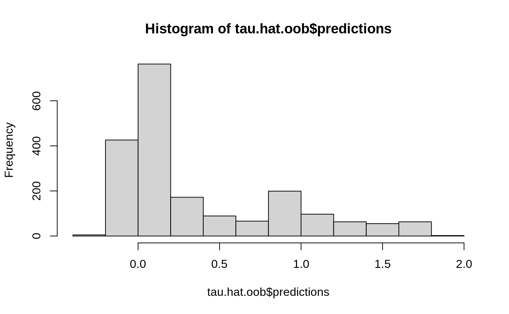
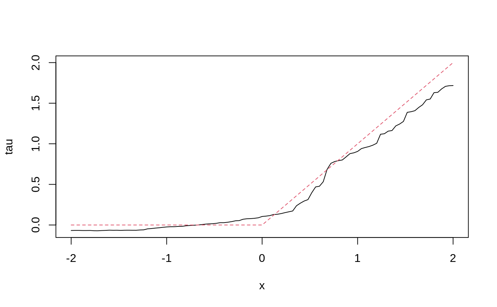
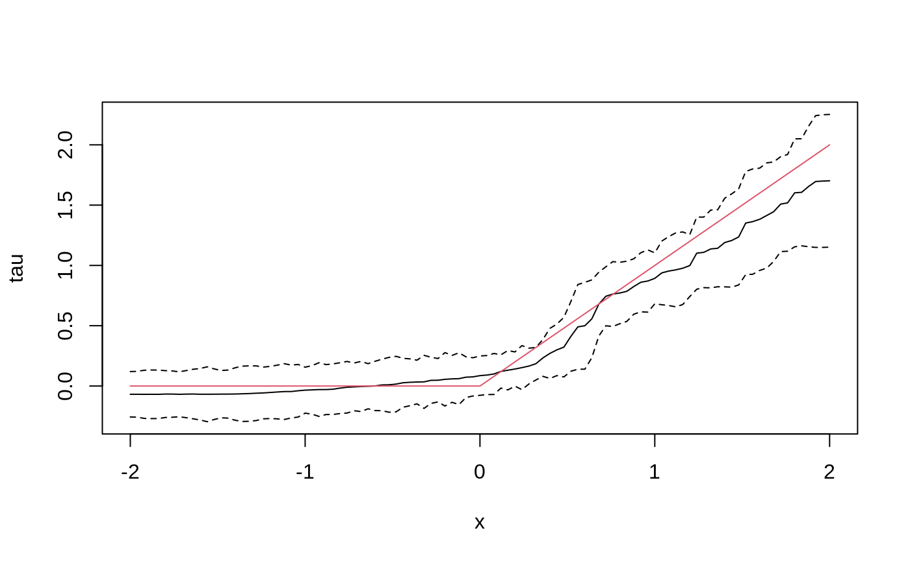
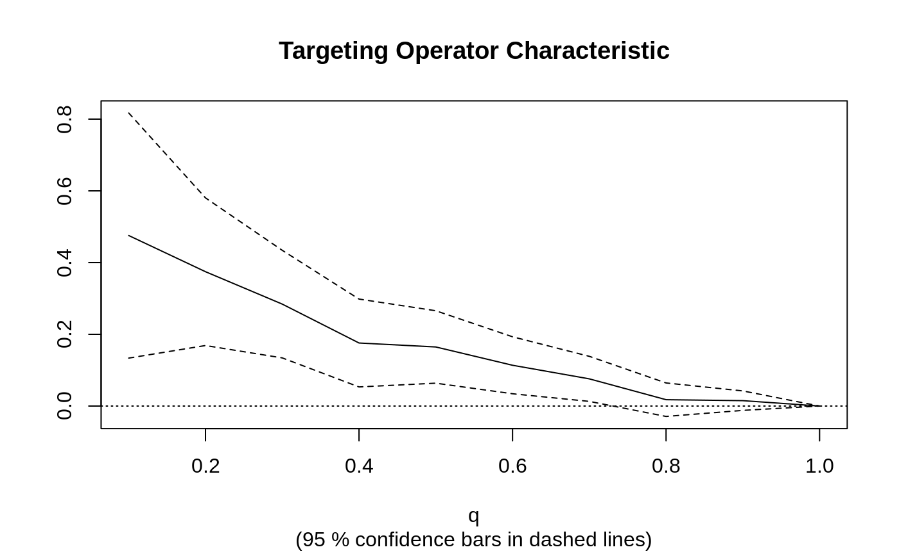

library(grf)
The following script demonstrates how to use GRF for heterogeneous treatment effect estimation. For examples of how to use other types of forests, please consult the R documentation on the relevant methods.
Generate data and train a causal forest
n <- 2000 p <- 10 X <- matrix(rnorm(n * p), n, p) X.test <- matrix(0, 101, p) X.test[, 1] <- seq(-2, 2, length.out = 101) W <- rbinom(n, 1, 0.4 + 0.2 * (X[, 1] > 0)) Y <- pmax(X[, 1], 0) * W + X[, 2] + pmin(X[, 3], 0) + rnorm(n) tau.forest <- causal_forest(X, Y, W) tau.forest #> GRF forest object of type causal_forest #> Number of trees: 2000 #> Number of training samples: 2000 #> Variable importance: #> 1 2 3 4 5 6 7 8 9 10 #> 0.691 0.033 0.041 0.046 0.029 0.029 0.034 0.027 0.033 0.037
Estimate treatment effects for the training data using out-of-bag prediction.

Estimate treatment effects for the test sample.
tau.hat <- predict(tau.forest, X.test) plot(X.test[, 1], tau.hat$predictions, ylim = range(tau.hat$predictions, 0, 2), xlab = "x", ylab = "tau", type = "l") lines(X.test[, 1], pmax(0, X.test[, 1]), col = 2, lty = 2)

Estimate the conditional average treatment effect on the full sample (CATE).
average_treatment_effect(tau.forest, target.sample = "all") #> estimate std.err #> 0.37345648 0.04978157
Estimate the conditional average treatment effect on the treated sample (CATT).
average_treatment_effect(tau.forest, target.sample = "treated") #> estimate std.err #> 0.47136673 0.05136118
Add confidence intervals for heterogeneous treatment effects; growing more trees is now recommended.
tau.forest <- causal_forest(X, Y, W, num.trees = 4000) tau.hat <- predict(tau.forest, X.test, estimate.variance = TRUE) sigma.hat <- sqrt(tau.hat$variance.estimates) plot(X.test[, 1], tau.hat$predictions, ylim = range(tau.hat$predictions + 1.96 * sigma.hat, tau.hat$predictions - 1.96 * sigma.hat, 0, 2), xlab = "x", ylab = "tau", type = "l") lines(X.test[, 1], tau.hat$predictions + 1.96 * sigma.hat, col = 1, lty = 2) lines(X.test[, 1], tau.hat$predictions - 1.96 * sigma.hat, col = 1, lty = 2) lines(X.test[, 1], pmax(0, X.test[, 1]), col = 2, lty = 1)

In some examples, pre-fitting models for Y and W separately may be helpful (e.g., if different models use different covariates). In some applications, one may even want to get Y.hat and W.hat using a completely different method (e.g., boosting).
# Generate new data. n <- 4000 p <- 20 X <- matrix(rnorm(n * p), n, p) TAU <- 1 / (1 + exp(-X[, 3])) W <- rbinom(n, 1, 1 / (1 + exp(-X[, 1] - X[, 2]))) Y <- pmax(X[, 2] + X[, 3], 0) + rowMeans(X[, 4:6]) / 2 + W * TAU + rnorm(n) forest.W <- regression_forest(X, W, tune.parameters = "all") W.hat <- predict(forest.W)$predictions forest.Y <- regression_forest(X, Y, tune.parameters = "all") Y.hat <- predict(forest.Y)$predictions forest.Y.varimp <- variable_importance(forest.Y) # Note: Forests may have a hard time when trained on very few variables # (e.g., ncol(X) = 1, 2, or 3). We recommend not being too aggressive # in selection. selected.vars <- which(forest.Y.varimp / mean(forest.Y.varimp) > 0.2) tau.forest <- causal_forest(X[, selected.vars], Y, W, W.hat = W.hat, Y.hat = Y.hat, tune.parameters = "all")
See if a causal forest succeeded in capturing heterogeneity by plotting the TOC and calculating a 95% CI for the AUTOC.
train <- sample(1:n, n / 2) train.forest <- causal_forest(X[train, ], Y[train], W[train]) eval.forest <- causal_forest(X[-train, ], Y[-train], W[-train]) rate <- rank_average_treatment_effect(eval.forest, predict(train.forest, X[-train, ])$predictions) plot(rate)

paste("AUTOC:", round(rate$estimate, 2), "+/", round(1.96 * rate$std.err, 2)) #> [1] "AUTOC: 0.21 +/ 0.1"
For more worked examples see the Tutorials section.